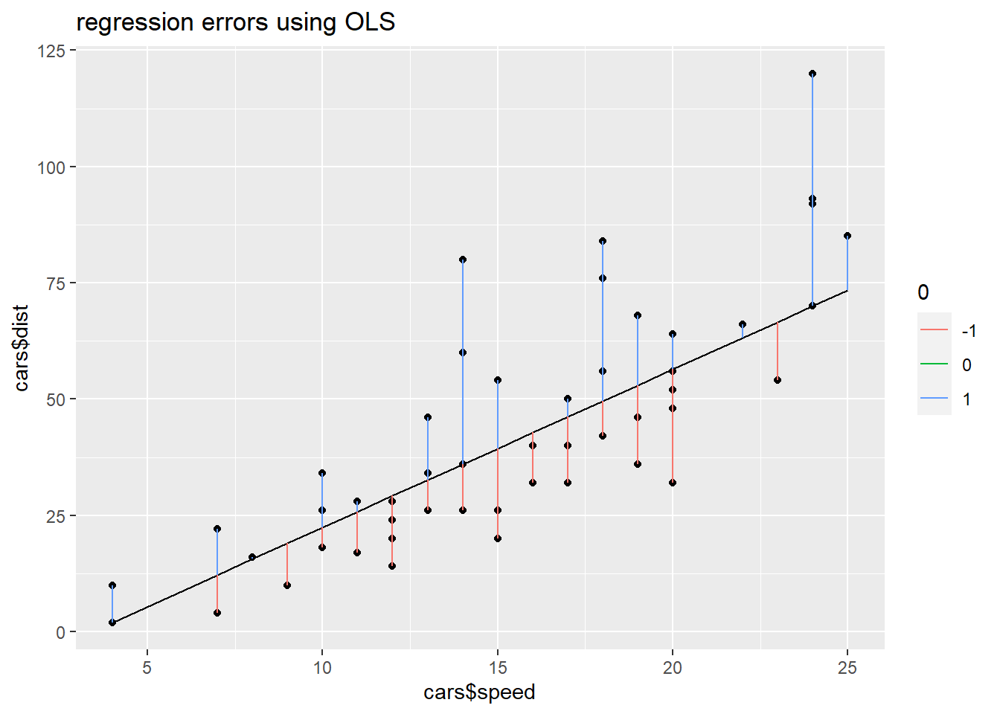
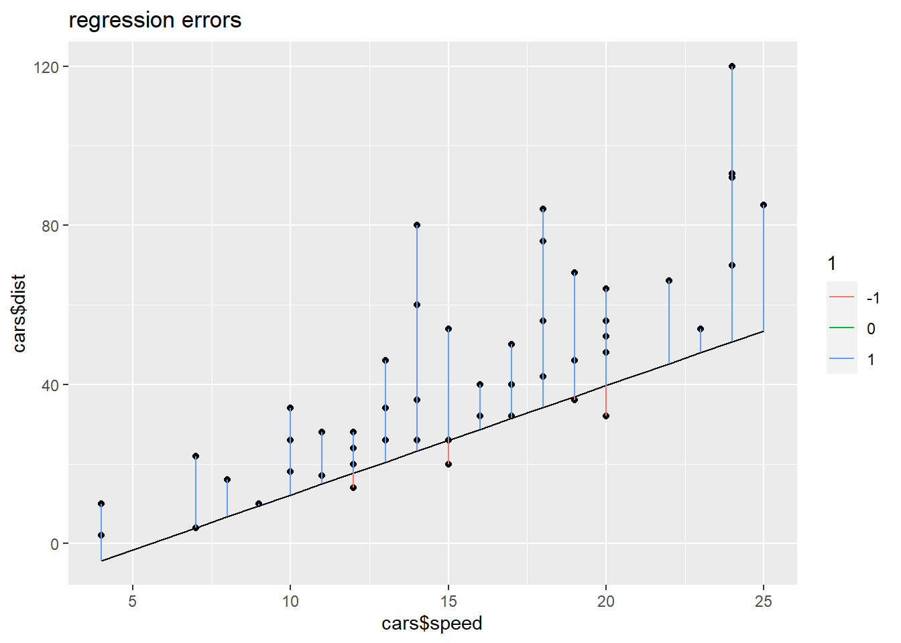

library(ggplot2)
library(lme4)
library(quantreg)
library(dplyr)
library(ggplot2)
library(tinytex)3 Methods
3.1 Regression
A regression consists of the mean function and the variance function [1]
\[ E(Y|X=x)=\beta_0 + \beta_1X \\ Var(Y|X=x) = \sigma^2 \\ \] Here X is a matrix of observations, and the \(\beta\)s attempt to estimate the observed outcomes \(y_i\). However, the estimates are rarely perfect, so an error, also called a residual, term must be introduced. \[ y_i = \hat{y} + \epsilon_i \] where \(y_i\) is the actual response variable, \(\hat{y}\) is the estimate, and \(\epsilon\), the error term, represents the difference between \(\hat{y}\) and \(y_i\).
Regression can use different criterions. These criterions will yield different betas which will have different behaviors.
3.2 Ordinary least squares
Ordinary least squares model, or OLS, is one of many ways of placing a regression line through points. It does this by minimizing the sum of squared residuals:
\[ argmin\sum_i^n \epsilon_i^2 = \sum_i^n (y_i - \hat{y}_i)^2 \]
The least squares estimates in this case are given by simple formulas
\[ \widehat{\beta} =\frac{\sum_{i=1}^n\left(x_i-\bar{x}\right)\left(y_i-\bar{y}\right)}{\sum_{i=1}^n\left(x_i-\bar{x}\right)^2} \]
\[ \widehat{\alpha} =\bar{y}-\widehat{\beta} \bar{x} \] The beta estimate will be the mean of the all the points.
Another common but less known way of ## Quantile Regression Quantile regression is another regression technique, except it minimizes the sum of the absolute residuals: \[argmin \space E(|y-\hat{y}|)\] The beta estimate will be the median of all of the points.
3.3 Proof the median minimizes the sum of absolute residuals
Assume, without loss of generality, that Y is a continuous random variable. The expected value of the absolute sum of deviations from a given center c can be split into the following two terms [2]:
\[ E|Y - c| = \int_{y\in R}|y-c|f(y)dy \\ =\int_{y < c} |y-c|f(y)dy + \int_{y>c}|y-c|f(y)dy \\ \]
If y is less than c, then y-c will always be negative. Therefore, |y-c|=-(c-y). By a similar argument, |y-c| is just (y-c) when y > c.
\[ =\int_{y<c}(c-y)f(y)dy + \int_{y>c}(y-c)f(y)dy \]
Since the absolute value is convex, differentiating E|y-c| with respect to c and setting the partial derivatives to zero will lead to the solution of the minimum.
\[ \frac{\partial}{\partial c}E|y-c|=0 \]
\[ \begin{aligned} & \left\{\left.(c-y) f(y)\right|_{-\infty} ^c+\int_{y<c} \frac{\partial}{\partial c}(c-y) f(y) d y\right\}+ \\ & \left\{\left.(y-c) f(y)\right|_c ^{+\infty}+\int_{y>c} \frac{\partial}{\partial c}(y-c) f(y) d y\right\}=0 \end{aligned} \]
The limit of any PDF approaching positive or negative infinity will equal 0, therefore the previous equation simplifies to:
\[ \begin{aligned} & \left\{\int_{y<c} \frac{\partial}{\partial c}(c-y) f(y) d y\right\}+ \\ & \left\{\int_{y>c} \frac{\partial}{\partial c}(y-c) f(y) d y\right\}=0 \end{aligned} \]
Taking the partial, \(\frac{\partial}{\partial c}(c-y)f(y)\) = f(y) and \(\frac{\partial}{\partial c}(y-c)f(y)\) = -f(y).
\[ \begin{aligned} & \left\{\int_{y<c} \theta f(y) d y\right\}+ \\ & \left\{\int_{y>c} -\theta f(y) d y\right\}=0 \end{aligned} \]
Using the CDF definition and the notion of reciprocals, the previous equation simplifies to: \(F(c)-[1-F(c)] = 0\) and thus \(2F(c)-1=0\) \(\longrightarrow\) \(F(c)=\frac{1}{2}\) \(\longrightarrow\) c=Me.
Thus the minimization to a weighted least absolute deviation loss function is the value that gives the theta^{th} quantile.
3.4 Generalization least absolute deviations
The solution of the minimization problem above is thus the median. The above solution does not change by multiplying the two components of \(E|Y-c|\) by a constant \(\theta\) and \((1-\theta)\), respectively. This allows us to formulate the same problem for the generic quantile \(\theta\) sing the same strategy used above:
\[ \frac{\partial}{\partial c} E\left[\rho_\theta(Y-c)\right]=\frac{\partial}{\partial c}\left\{(1-\theta) \int_{-\infty}^c|y-c| f(y) d y+\theta \int_c^{+\infty}|y-c| f(y) d y\right\} . \]
Repeating the above argument, we easily obtain:
\[ \frac{\partial}{\partial c} E\left[\rho_\theta(Y-c)\right]=(1-\theta) F(c)-\theta(1-F(c))=0 \]
and then \(q_\theta\) as the solution of the minimization problem:
\[ F(c)-\theta F(c)-\theta+\theta F(c)=0 \Longrightarrow F(c)=\theta \Longrightarrow c=q_\theta . \]
, interpreting \(Y\) as a response variable and \(\mathbf{X}\) as a set of predictor variables, the idea of the unconditional median can be extended to the estimation of the conditional median function:
\[ \hat{\mu}\left(\mathbf{x}_i, \boldsymbol{\beta}\right)=\underset{\mu}{\operatorname{argmin}} E\left[|Y-\mu\left(\mathbf{x}_i, \boldsymbol{\beta}\right)\right|], \]
In the case of a linear mean function, \(\mu(x_i, \beta)=x_i^T\beta\) so the previous equation becomes:
\[ \hat{\boldsymbol{\beta}}=\underset{\boldsymbol{\beta}} argmin \space E[|Y - x_i^T\beta|] \]
By the same argument,
\[ q_\theta=\underset{c}{\operatorname{argmin}} E\left[\rho_\theta(Y-c)\right] \]
where \(\rho_\theta(\).\()\) denotes the following loss function:
\[ \begin{aligned} \rho_\theta(y) & =[\theta-I(y<0)] y \\ & =[(1-\theta) I(y \leq 0)+\theta I(y>0)]|y| . \end{aligned} \]
3.4.1 Graphic
data(cars)
rq50 <- rq(dist ~ speed, data=cars, tau=0.5)
yhat<-rq50$fitted.values
color = sign(rq50$residuals)
qplot(x=cars$speed, y=cars$dist)+geom_line(y=yhat)+
geom_segment(aes(x=cars$speed, xend=cars$speed, y=cars$dist, yend=yhat, group=as.factor(color), color=as.factor(color)))+
labs(title="regression errors using OLS", color=color)
table(color)color
-1 0 1
24 3 23 Notice that approximately half of the distribution of the points are above the QR line and approximately half are above the QR line. Now let’s see what happens when we look at the 90th conditional quantile.
rq90 <- rq(dist ~ speed, data=cars, tau=0.9)
yhat<-rq90$fitted.values
color = sign(rq90$residuals)
qplot(x=cars$speed, y=cars$dist)+geom_line(y=yhat)+
geom_segment(aes(x=cars$speed, xend=cars$speed, y=cars$dist, yend=yhat, group=as.factor(color), color=as.factor(color)))+
labs(title="regression errors", color=color)
table(color)color
-1 0 1
44 2 4 When we input the .9 for the quantile, we get approximately 90% of the points under the QR line and 10% over the QR line.
rq10 <- rq(dist ~ speed, data=cars, tau=0.1)
yhat<-rq10$fitted.values
color = sign(rq10$residuals)
qplot(x=cars$speed, y=cars$dist)+geom_line(y=yhat)+
geom_segment(aes(x=cars$speed, xend=cars$speed, y=cars$dist, yend=yhat, group=as.factor(color), color=as.factor(color)))+
labs(title="regression errors", color=color)
table(color)color
-1 0 1
5 1 44 When we input 0.1 for the 10th percentile, we get approximately 90% of the points above the QR line and 10% below the QR line.
Thus, we can see that QR is not online a robust ## Evaluation metrics
3.5 Summary of OLS and QR
OLS minimizes the sum of squared residuals, and QR minimizes the sum of absolute valued residuals. This leads to differing results when placing the regression line. OLS will place the line between the arithmetic mean of all the points, but QR will place its regression line through the median of all of the points. In other words, given an input of the 50th quantile, QR regression will place the regression line in such a way that half of the points will be above the regression line and half will be below the regression line. In general, given an input of the \(\theta^{th}\) quantile, QR will place a regression line so that \(\theta\) percentage of points will be below the regression line. This allows QR has some interesting benefits. Although OLS is generally better for normally distributed data, QR performs relatively well with normally distributed data as well. However, one of the biggest charms of QR is that it can be used on non-normally distributed data. Since QR allows statisticians to look at the behavior across the entire distribution, rather than just fixating on the mean. With QR, one can see at what intervals the model breaks down or excels.
4 Citations
[1]“Applied Linear Regression - ProQuest,” www.proquest.com. https://www.proquest.com/legacydocview/EBC/7103845?accountid=10920. (accessed Nov. 12, 2023).
[2]“Quantile Regression : Theory and Applications” Davino, Cristina., et al. Quantile Regression : Theory and Applications, John Wiley & Sons, Incorporated, 2013. ProQuest Ebook Central, https://www.proquest.com/legacydocview/EBC/1489927?accountid=1092 . (accessed Nov. 12, 2023)